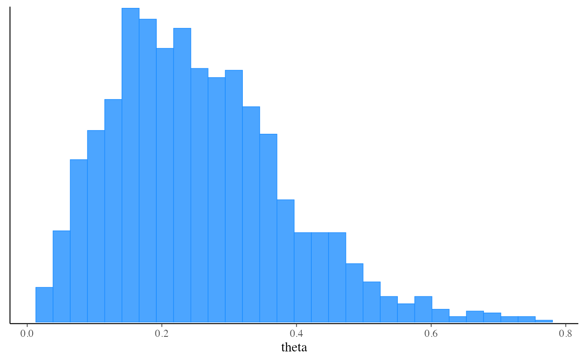
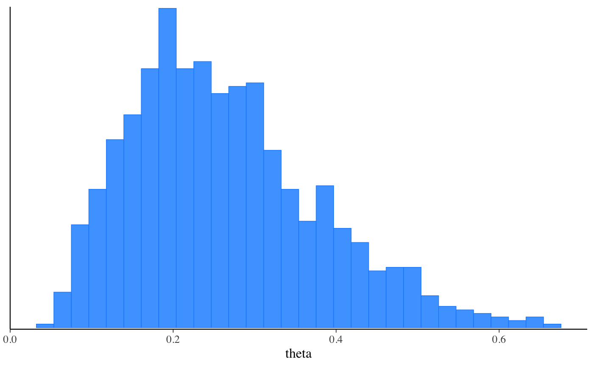

A CmdStanModel object is an R6 object created
by the cmdstan_model() function. The object stores the path to a Stan
program and compiled executable (once created), and provides methods for
fitting the model using Stan's algorithms.
CmdStanModel objects have the following associated
methods, many of which have their own (linked) documentation pages:
| Method | Description |
$stan_file() | Return the file path to the Stan program. |
$code() | Return Stan program as a character vector. |
$print() | Print readable version of Stan program. |
$check_syntax() | Check Stan syntax without having to compile. |
$format() | Format and canonicalize the Stan model code. |
| Method | Description |
$compile() | Compile Stan program. |
$exe_file() | Return the file path to the compiled executable. |
$hpp_file() | Return the file path to the .hpp file containing the generated C++ code. |
$save_hpp_file() | Save the .hpp file containing the generated C++ code. |
$expose_functions() | Expose Stan functions for use in R. |
| Method | Description |
$sample() | Run CmdStan's "sample" method, return CmdStanMCMC object. |
$sample_mpi() | Run CmdStan's "sample" method with MPI, return CmdStanMCMC object. |
$optimize() | Run CmdStan's "optimize" method, return CmdStanMLE object. |
$variational() | Run CmdStan's "variational" method, return CmdStanVB object. |
$generate_quantities() | Run CmdStan's "generate quantities" method, return CmdStanGQ object. |
The CmdStanR website (mc-stan.org/cmdstanr) for online documentation and tutorials.
The Stan and CmdStan documentation:
Stan documentation: mc-stan.org/users/documentation
CmdStan User’s Guide: mc-stan.org/docs/cmdstan-guide
# \dontrun{
library(cmdstanr)
library(posterior)
library(bayesplot)
#> This is bayesplot version 1.10.0
#> - Online documentation and vignettes at mc-stan.org/bayesplot
#> - bayesplot theme set to bayesplot::theme_default()
#> * Does _not_ affect other ggplot2 plots
#> * See ?bayesplot_theme_set for details on theme setting
#>
#> Attaching package: ‘bayesplot’
#> The following object is masked from ‘package:posterior’:
#>
#> rhat
color_scheme_set("brightblue")
# Set path to CmdStan
# (Note: if you installed CmdStan via install_cmdstan() with default settings
# then setting the path is unnecessary but the default below should still work.
# Otherwise use the `path` argument to specify the location of your
# CmdStan installation.)
set_cmdstan_path(path = NULL)
#> CmdStan path set to: /Users/jgabry/.cmdstan/cmdstan-2.32.2
# Create a CmdStanModel object from a Stan program,
# here using the example model that comes with CmdStan
file <- file.path(cmdstan_path(), "examples/bernoulli/bernoulli.stan")
mod <- cmdstan_model(file)
mod$print()
#> data {
#> int<lower=0> N;
#> array[N] int<lower=0,upper=1> y;
#> }
#> parameters {
#> real<lower=0,upper=1> theta;
#> }
#> model {
#> theta ~ beta(1,1); // uniform prior on interval 0,1
#> y ~ bernoulli(theta);
#> }
# Data as a named list (like RStan)
stan_data <- list(N = 10, y = c(0,1,0,0,0,0,0,0,0,1))
# Run MCMC using the 'sample' method
fit_mcmc <- mod$sample(
data = stan_data,
seed = 123,
chains = 2,
parallel_chains = 2
)
#> Running MCMC with 2 parallel chains...
#>
#> Chain 1 Iteration: 1 / 2000 [ 0%] (Warmup)
#> Chain 1 Iteration: 100 / 2000 [ 5%] (Warmup)
#> Chain 1 Iteration: 200 / 2000 [ 10%] (Warmup)
#> Chain 1 Iteration: 300 / 2000 [ 15%] (Warmup)
#> Chain 1 Iteration: 400 / 2000 [ 20%] (Warmup)
#> Chain 1 Iteration: 500 / 2000 [ 25%] (Warmup)
#> Chain 1 Iteration: 600 / 2000 [ 30%] (Warmup)
#> Chain 1 Iteration: 700 / 2000 [ 35%] (Warmup)
#> Chain 1 Iteration: 800 / 2000 [ 40%] (Warmup)
#> Chain 1 Iteration: 900 / 2000 [ 45%] (Warmup)
#> Chain 1 Iteration: 1000 / 2000 [ 50%] (Warmup)
#> Chain 1 Iteration: 1001 / 2000 [ 50%] (Sampling)
#> Chain 1 Iteration: 1100 / 2000 [ 55%] (Sampling)
#> Chain 1 Iteration: 1200 / 2000 [ 60%] (Sampling)
#> Chain 1 Iteration: 1300 / 2000 [ 65%] (Sampling)
#> Chain 1 Iteration: 1400 / 2000 [ 70%] (Sampling)
#> Chain 1 Iteration: 1500 / 2000 [ 75%] (Sampling)
#> Chain 1 Iteration: 1600 / 2000 [ 80%] (Sampling)
#> Chain 1 Iteration: 1700 / 2000 [ 85%] (Sampling)
#> Chain 1 Iteration: 1800 / 2000 [ 90%] (Sampling)
#> Chain 1 Iteration: 1900 / 2000 [ 95%] (Sampling)
#> Chain 1 Iteration: 2000 / 2000 [100%] (Sampling)
#> Chain 2 Iteration: 1 / 2000 [ 0%] (Warmup)
#> Chain 2 Iteration: 100 / 2000 [ 5%] (Warmup)
#> Chain 2 Iteration: 200 / 2000 [ 10%] (Warmup)
#> Chain 2 Iteration: 300 / 2000 [ 15%] (Warmup)
#> Chain 2 Iteration: 400 / 2000 [ 20%] (Warmup)
#> Chain 2 Iteration: 500 / 2000 [ 25%] (Warmup)
#> Chain 2 Iteration: 600 / 2000 [ 30%] (Warmup)
#> Chain 2 Iteration: 700 / 2000 [ 35%] (Warmup)
#> Chain 2 Iteration: 800 / 2000 [ 40%] (Warmup)
#> Chain 2 Iteration: 900 / 2000 [ 45%] (Warmup)
#> Chain 2 Iteration: 1000 / 2000 [ 50%] (Warmup)
#> Chain 2 Iteration: 1001 / 2000 [ 50%] (Sampling)
#> Chain 2 Iteration: 1100 / 2000 [ 55%] (Sampling)
#> Chain 2 Iteration: 1200 / 2000 [ 60%] (Sampling)
#> Chain 2 Iteration: 1300 / 2000 [ 65%] (Sampling)
#> Chain 2 Iteration: 1400 / 2000 [ 70%] (Sampling)
#> Chain 2 Iteration: 1500 / 2000 [ 75%] (Sampling)
#> Chain 2 Iteration: 1600 / 2000 [ 80%] (Sampling)
#> Chain 2 Iteration: 1700 / 2000 [ 85%] (Sampling)
#> Chain 2 Iteration: 1800 / 2000 [ 90%] (Sampling)
#> Chain 2 Iteration: 1900 / 2000 [ 95%] (Sampling)
#> Chain 2 Iteration: 2000 / 2000 [100%] (Sampling)
#> Chain 1 finished in 0.0 seconds.
#> Chain 2 finished in 0.0 seconds.
#>
#> Both chains finished successfully.
#> Mean chain execution time: 0.0 seconds.
#> Total execution time: 0.2 seconds.
#>
# Use 'posterior' package for summaries
fit_mcmc$summary()
#> # A tibble: 2 × 10
#> variable mean median sd mad q5 q95 rhat ess_bulk ess_tail
#> <chr> <num> <num> <num> <num> <num> <num> <num> <num> <num>
#> 1 lp__ -7.30 -7.03 0.721 0.380 -8.82 -6.75 1.00 902. 1006.
#> 2 theta 0.247 0.233 0.122 0.129 0.0786 0.470 1.00 762. 712.
# Get posterior draws
draws <- fit_mcmc$draws()
print(draws)
#> # A draws_array: 1000 iterations, 2 chains, and 2 variables
#> , , variable = lp__
#>
#> chain
#> iteration 1 2
#> 1 -6.8 -6.8
#> 2 -6.9 -6.8
#> 3 -7.0 -7.0
#> 4 -6.9 -7.1
#> 5 -6.7 -7.0
#>
#> , , variable = theta
#>
#> chain
#> iteration 1 2
#> 1 0.28 0.21
#> 2 0.19 0.20
#> 3 0.16 0.17
#> 4 0.20 0.36
#> 5 0.25 0.34
#>
#> # ... with 995 more iterations
# Convert to data frame using posterior::as_draws_df
as_draws_df(draws)
#> # A draws_df: 1000 iterations, 2 chains, and 2 variables
#> lp__ theta
#> 1 -6.8 0.28
#> 2 -6.9 0.19
#> 3 -7.0 0.16
#> 4 -6.9 0.20
#> 5 -6.7 0.25
#> 6 -7.1 0.36
#> 7 -9.0 0.55
#> 8 -7.2 0.15
#> 9 -6.8 0.23
#> 10 -7.5 0.42
#> # ... with 1990 more draws
#> # ... hidden reserved variables {'.chain', '.iteration', '.draw'}
# Plot posterior using bayesplot (ggplot2)
mcmc_hist(fit_mcmc$draws("theta"))
#> `stat_bin()` using `bins = 30`. Pick better value with `binwidth`.

# Call CmdStan's diagnose and stansummary utilities
fit_mcmc$cmdstan_diagnose()
#> Processing csv files: /var/folders/s0/zfzm55px2nd2v__zlw5xfj2h0000gn/T/RtmpFBtN6X/bernoulli-202307251434-1-21173a.csv, /var/folders/s0/zfzm55px2nd2v__zlw5xfj2h0000gn/T/RtmpFBtN6X/bernoulli-202307251434-2-21173a.csv
#>
#> Checking sampler transitions treedepth.
#> Treedepth satisfactory for all transitions.
#>
#> Checking sampler transitions for divergences.
#> No divergent transitions found.
#>
#> Checking E-BFMI - sampler transitions HMC potential energy.
#> E-BFMI satisfactory.
#>
#> Effective sample size satisfactory.
#>
#> Split R-hat values satisfactory all parameters.
#>
#> Processing complete, no problems detected.
fit_mcmc$cmdstan_summary()
#> Inference for Stan model: bernoulli_model
#> 2 chains: each with iter=(1000,1000); warmup=(0,0); thin=(1,1); 2000 iterations saved.
#>
#> Warmup took (0.0030, 0.0040) seconds, 0.0070 seconds total
#> Sampling took (0.011, 0.011) seconds, 0.022 seconds total
#>
#> Mean MCSE StdDev 5% 50% 95% N_Eff N_Eff/s R_hat
#>
#> lp__ -7.3 2.6e-02 0.72 -8.8 -7.0 -6.8 781 35502 1.0
#> accept_stat__ 0.92 8.3e-03 0.13 0.64 0.97 1.0 235 10662 1.0e+00
#> stepsize__ 0.95 7.9e-02 0.079 0.87 1.0 1.0 1.0 46 2.0e+13
#> treedepth__ 1.4 1.1e-02 0.48 1.0 1.0 2.0 1874 85179 1.0e+00
#> n_leapfrog__ 2.5 1.4e-01 1.3 1.0 3.0 3.0 89 4050 1.0e+00
#> divergent__ 0.00 nan 0.00 0.00 0.00 0.00 nan nan nan
#> energy__ 7.8 3.6e-02 1.00 6.8 7.5 9.6 775 35215 1.0e+00
#>
#> theta 0.25 4.3e-03 0.12 0.079 0.23 0.47 796 36197 1.0
#>
#> Samples were drawn using hmc with nuts.
#> For each parameter, N_Eff is a crude measure of effective sample size,
#> and R_hat is the potential scale reduction factor on split chains (at
#> convergence, R_hat=1).
# For models fit using MCMC, if you like working with RStan's stanfit objects
# then you can create one with rstan::read_stan_csv()
# stanfit <- rstan::read_stan_csv(fit_mcmc$output_files())
# Run 'optimize' method to get a point estimate (default is Stan's LBFGS algorithm)
# and also demonstrate specifying data as a path to a file instead of a list
my_data_file <- file.path(cmdstan_path(), "examples/bernoulli/bernoulli.data.json")
fit_optim <- mod$optimize(data = my_data_file, seed = 123)
#> Initial log joint probability = -9.51104
#> Iter log prob ||dx|| ||grad|| alpha alpha0 # evals Notes
#> 6 -5.00402 0.000103557 2.55661e-07 1 1 9
#> Optimization terminated normally:
#> Convergence detected: relative gradient magnitude is below tolerance
#> Finished in 0.1 seconds.
fit_optim$summary()
#> # A tibble: 2 × 2
#> variable estimate
#> <chr> <num>
#> 1 lp__ -5.00
#> 2 theta 0.2
# Run 'variational' method to approximate the posterior (default is meanfield ADVI)
fit_vb <- mod$variational(data = stan_data, seed = 123)
#> ------------------------------------------------------------
#> EXPERIMENTAL ALGORITHM:
#> This procedure has not been thoroughly tested and may be unstable
#> or buggy. The interface is subject to change.
#> ------------------------------------------------------------
#> Gradient evaluation took 7e-06 seconds
#> 1000 transitions using 10 leapfrog steps per transition would take 0.07 seconds.
#> Adjust your expectations accordingly!
#> Begin eta adaptation.
#> Iteration: 1 / 250 [ 0%] (Adaptation)
#> Iteration: 50 / 250 [ 20%] (Adaptation)
#> Iteration: 100 / 250 [ 40%] (Adaptation)
#> Iteration: 150 / 250 [ 60%] (Adaptation)
#> Iteration: 200 / 250 [ 80%] (Adaptation)
#> Success! Found best value [eta = 1] earlier than expected.
#> Begin stochastic gradient ascent.
#> iter ELBO delta_ELBO_mean delta_ELBO_med notes
#> 100 -6.262 1.000 1.000
#> 200 -6.263 0.500 1.000
#> 300 -6.307 0.336 0.007 MEDIAN ELBO CONVERGED
#> Drawing a sample of size 1000 from the approximate posterior...
#> COMPLETED.
#> Finished in 0.1 seconds.
fit_vb$summary()
#> # A tibble: 3 × 7
#> variable mean median sd mad q5 q95
#> <chr> <num> <num> <num> <num> <num> <num>
#> 1 lp__ -7.18 -6.94 0.588 0.259 -8.36 -6.75
#> 2 lp_approx__ -0.515 -0.221 0.692 0.303 -2.06 -0.00257
#> 3 theta 0.263 0.246 0.115 0.113 0.106 0.481
# Plot approximate posterior using bayesplot
mcmc_hist(fit_vb$draws("theta"))
#> `stat_bin()` using `bins = 30`. Pick better value with `binwidth`.

# Specifying initial values as a function
fit_mcmc_w_init_fun <- mod$sample(
data = stan_data,
seed = 123,
chains = 2,
refresh = 0,
init = function() list(theta = runif(1))
)
#> Running MCMC with 2 sequential chains...
#>
#> Chain 1 finished in 0.0 seconds.
#> Chain 2 finished in 0.0 seconds.
#>
#> Both chains finished successfully.
#> Mean chain execution time: 0.0 seconds.
#> Total execution time: 0.3 seconds.
#>
fit_mcmc_w_init_fun_2 <- mod$sample(
data = stan_data,
seed = 123,
chains = 2,
refresh = 0,
init = function(chain_id) {
# silly but demonstrates optional use of chain_id
list(theta = 1 / (chain_id + 1))
}
)
#> Running MCMC with 2 sequential chains...
#>
#> Chain 1 finished in 0.0 seconds.
#> Chain 2 finished in 0.0 seconds.
#>
#> Both chains finished successfully.
#> Mean chain execution time: 0.0 seconds.
#> Total execution time: 0.3 seconds.
#>
fit_mcmc_w_init_fun_2$init()
#> [[1]]
#> [[1]]$theta
#> [1] 0.5
#>
#>
#> [[2]]
#> [[2]]$theta
#> [1] 0.3333333
#>
#>
# Specifying initial values as a list of lists
fit_mcmc_w_init_list <- mod$sample(
data = stan_data,
seed = 123,
chains = 2,
refresh = 0,
init = list(
list(theta = 0.75), # chain 1
list(theta = 0.25) # chain 2
)
)
#> Running MCMC with 2 sequential chains...
#>
#> Chain 1 finished in 0.0 seconds.
#> Chain 2 finished in 0.0 seconds.
#>
#> Both chains finished successfully.
#> Mean chain execution time: 0.0 seconds.
#> Total execution time: 0.3 seconds.
#>
fit_optim_w_init_list <- mod$optimize(
data = stan_data,
seed = 123,
init = list(
list(theta = 0.75)
)
)
#> Initial log joint probability = -11.6657
#> Iter log prob ||dx|| ||grad|| alpha alpha0 # evals Notes
#> 6 -5.00402 0.000237915 9.55309e-07 1 1 9
#> Optimization terminated normally:
#> Convergence detected: relative gradient magnitude is below tolerance
#> Finished in 0.1 seconds.
fit_optim_w_init_list$init()
#> [[1]]
#> [[1]]$theta
#> [1] 0.75
#>
#>
# }